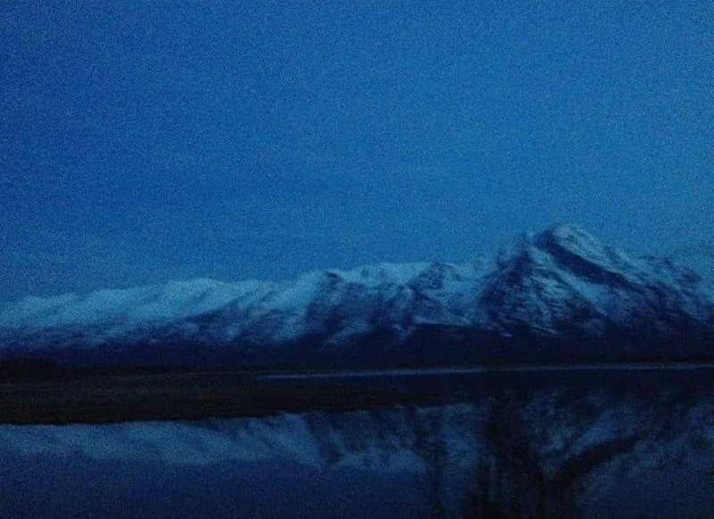
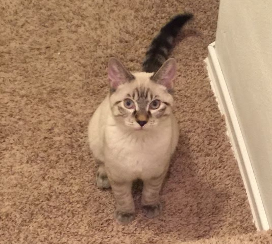
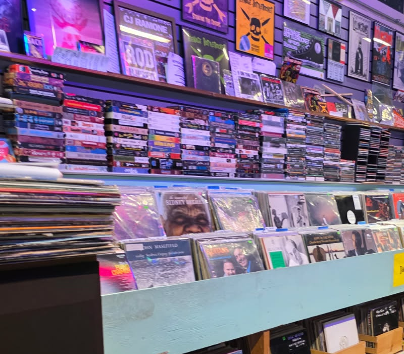
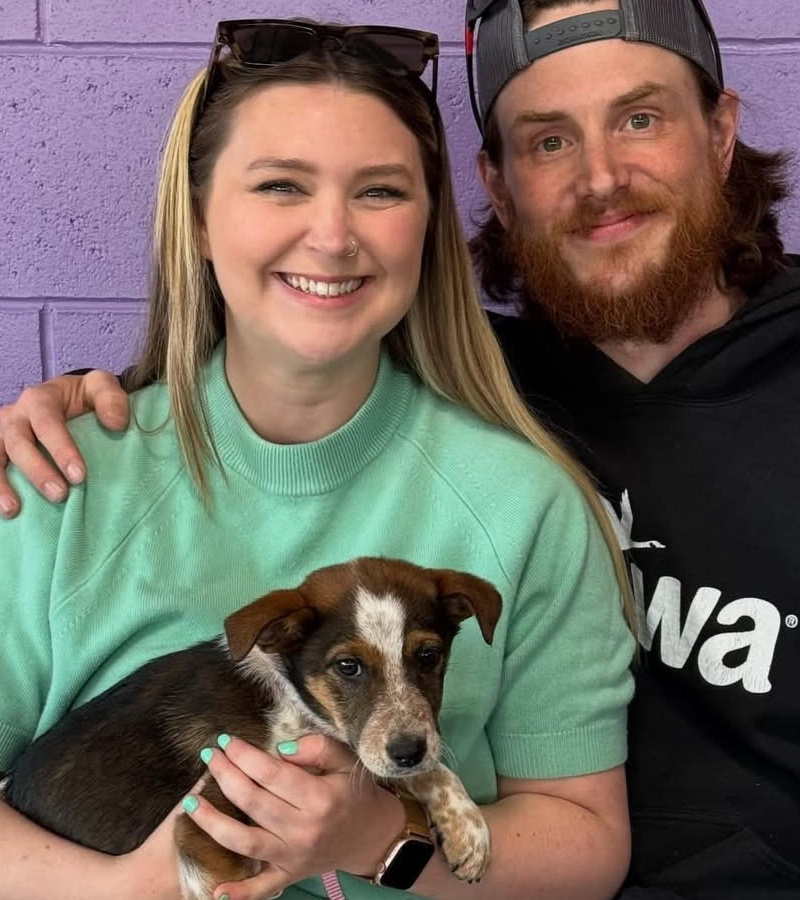
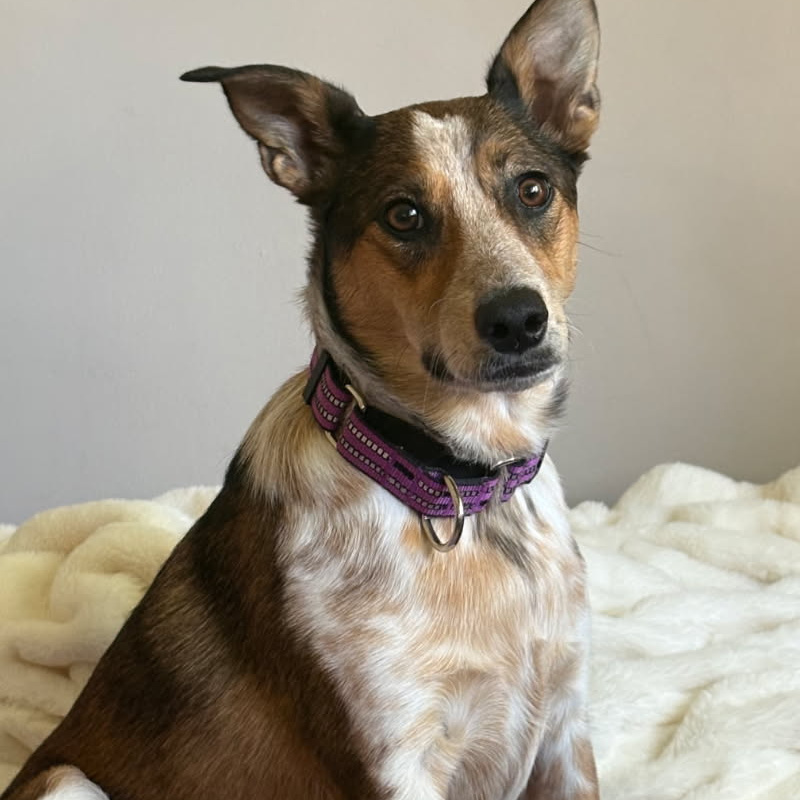

I decided to focus my gallery around just a few things that are a large part of my life and that I'm thankful for. My time living in alaska, my love of music, and my first pets. I don't have links to my sources since these are all my own photos so I at least included links to open the images in a new tab.




